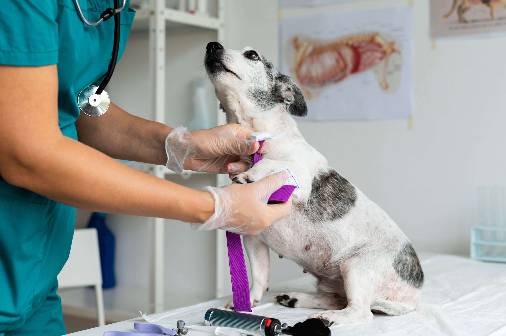
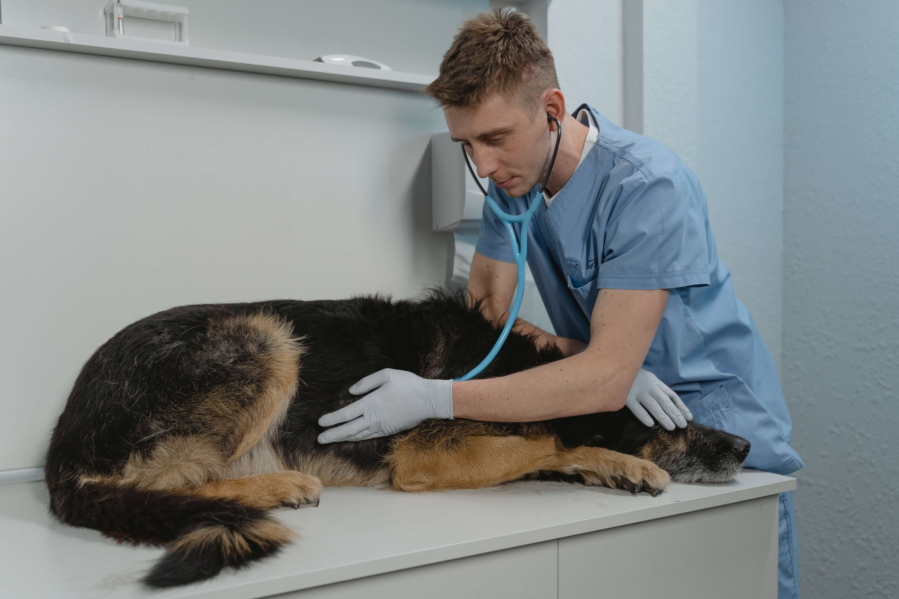
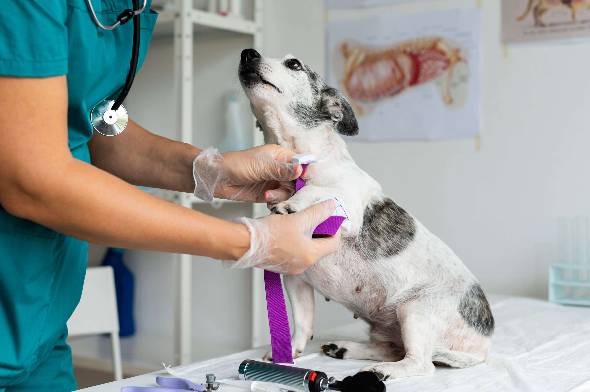
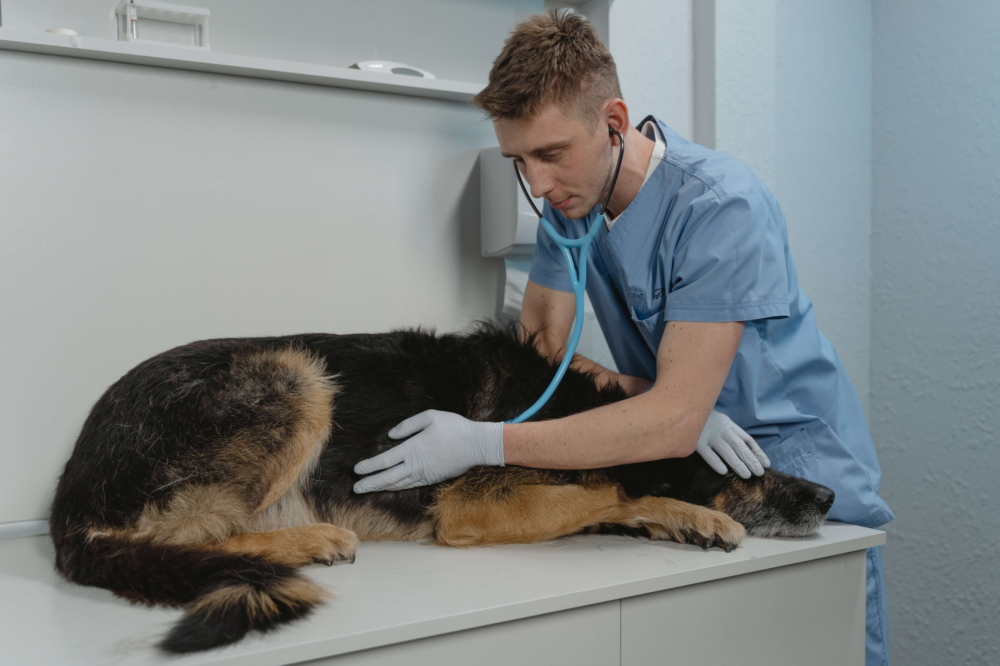

 
  
Sobre Nosotros
En el año 2012, nació nuestra veterinaria con el propósito de brindar atención médica veterinaria personalizada a las mascotas desde la comodidad de sus hogares. Reconocimos la necesidad de servicios veterinarios especializados y de emergencia disponibles las 24 horas del día, ya que algunas mascotas no podían ser trasladadas fácilmente o no había clínicas veterinarias con disponibilidad constante en nuestra ciudad. En Paws & Claws, nuestro objetivo principal es fomentar la medicina veterinaria preventiva para garantizar la salud de tus mascotas. Nuestro equipo de especialistas está comprometido en brindar orientación y cuidados necesarios para cada animal.
Nuestra visión es convertirnos en la mejor clínica veterinaria a nivel local y expandirnos a diferentes territorios nacionales. Estamos dedicados a ofrecer servicios de calidad respaldados por especialistas en diversas áreas para atender a mascotas domésticas. En Paws & Claws, nos enorgullece ofrecer servicios veterinarios a domicilio, lo que permite brindar comodidad y tranquilidad tanto a las mascotas como a sus dueños. Además, nuestro equipo de especialistas está disponible las 24 horas para atender cualquier emergencia veterinaria.
Valoramos la salud y el bienestar de tus mascotas y nos esforzamos por establecer una relación de confianza con cada una de ellas y sus familias. Nuestro enfoque en la medicina veterinaria preventiva nos permite proporcionar el mejor cuidado posible, ayudando a prevenir enfermedades y promoviendo una vida saludable y feliz para tus queridas mascotas.
Gracias por elegir Paws & Claws. Esperamos ser tu veterinaria de confianza y brindar el mejor cuidado y atención a tus adorables compañeros peludos. Juntos, trabajaremos para asegurar su bienestar y ofrecerles una vida llena de salud y alegría.